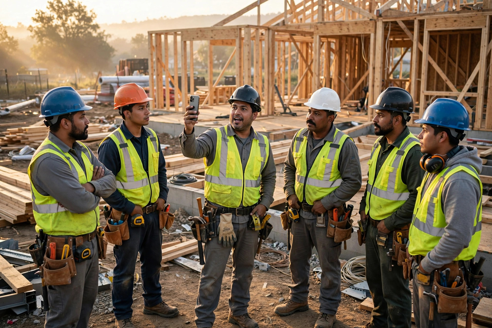

32% of the Crew Is Latino. Your Safety Talk Is in English. OSHA Fines That $16,550.

Picture Monday morning, 6:45, on a framing job in Fresno. Fourteen men gather around the tailgate at the foreman's signal. He runs through the week's hazards in English, fast, the way foremen do when the concrete truck is already idling and the day rate started ticking at six. Ten men nod. Two understood. Eight more watched the hands of the men who nodded. And nodded too.
Then somebody climbs the roof line unprotected. Nobody is surprised. Anything else would have been the surprise.
Numbers behind the nods
Latinos are 32 percent of the American construction workforce, per a 2026 UnidosUS analysis, the highest share of any essential industry in the country (UnidosUS, 2026). Construction killed 1,034 workers in 2024 at a fatality rate of 9.2 per 100,000 full-time workers, the lowest rate since 2011, and still the second-highest body count of any private industry (Bureau of Labor Statistics, Census of Fatal Occupational Injuries 2024).
Now stack those facts: Hispanic or Latino workers died at a rate of 4.3 per 100,000 in 2024, against 3.3 for all workers, and 68.5 percent of those 1,229 dead were foreign-born (BLS CFOI 2024). An earlier BLS analysis found foreign-born Hispanic workers were 8.2 percent of the workforce but 14 percent of work deaths. Read that again: eight percent of the hands, fourteen percent of the bodies.
Nobody has proven how many of those deaths trace to a safety talk the victim never understood. OSHA's citation data does not tag language as a factor. But the agency has treated the language gap as a known killer for more than twenty years, since it built a Spanish-language safety page and a Spanish OSHA 10-hour construction course back in 2002 (Occupational Health & Safety). Everybody in the industry knows the gap exists, and the industry just keeps talking past it anyway.
What OSHA actually requires
Here is the part most small builders get backwards, so read it twice: OSHA does not require your safety training to be in English. In a 2010 interpretation letter, the agency answered the question flatly: no construction standard requires training to be conveyed and understood in English (OSHA, Letter 20071001-7893). What 29 CFR 1926.21(b)(2) requires is that you instruct each worker in the recognition and avoidance of unsafe conditions. Fall-protection training under 29 CFR 1926.503(a)(1) must enable each worker to recognize the hazards.
Then-Assistant Secretary David Michaels spelled out the standard in a 2010 policy statement: "train" and "instruct" mean presenting information in a manner the employees receiving it are capable of understanding, which is the long way of saying the quiet part out loud: delivery is not the bar; comprehension is. Your English talk, delivered to a crew that nods without understanding, is not a good-faith effort; it is a ritual performed for the benefit of nobody, and under the letter of the standard it is not training at all.
And the invoice for getting this wrong keeps rising. A serious training violation now carries up to $16,550. Per violation. Willful or repeated: $165,514 per violation (OSHA penalties, effective January 15, 2026).
Most small builders run the standard dodge: one bilingual laborer translates on the fly while the foreman talks, with no documentation and no comprehension check. It satisfies neither the regulation nor the policy statement. Neither one. You could not design a worse defense if you tried.
A phone the foreman already carries
Which is why the cheapest fix in construction safety right now fits in a pocket. Real-time AI speech translation has gotten good enough that the foreman can speak into his phone and the crew hears Spanish audio a second later, which sounds like science fiction until you remember your phone already does this for tourist menus. No interpreter on the payroll, no laminated card that nobody reads, and no second foreman hired to shadow the first one just to translate.
Run the math for a small GC with one twelve-person crew, because this is where the abstract policy argument dies and the actual decision lives. Option one is the old way: hire a bilingual safety consultant to run the weekly talk. Market rate runs roughly $150 to $250 an hour, so one hour a week costs $600 to $1,000 a month, every month, whether the crew changes or not, and on residential margins that is real money. Option two: a consumer-grade translation layer on the foreman's phone, running about $0 to $50 a month, plus a five-question comprehension quiz in Spanish that the app logs, timestamps, and stores, which is the first documented proof of understanding most small residential builders would ever have on file. That log is the part that matters, because OSHA's bar is comprehension, and a timestamped quiz record is the first time most small builders would have actual evidence they met it, which means the cheapest compliance tool in the industry also happens to be the one that finally produces the paper trail the regulation always demanded.
Penalty math makes the decision almost insulting: one serious citation at $16,550 buys 16 to 27 months of the human consultant. It buys 27 to 69 years of the AI option. Prevent one citation in a working lifetime and the phone already paid for itself several times over. Break-even sits so far past any realistic planning horizon that the only way to lose money on this is to keep paying for nothing.
What the app cannot fix
Now the honest part, because a steel-toed optimism helps nobody. Translation solves the communication problem, and communication is not the killing problem.
Workers dying fastest are disproportionately foreign-born, disproportionately undocumented, and disproportionately hired through labor brokers and subs-of-subs, which is the exact layer where no toolbox talk happens at all: not in English or Spanish, with an app or without one. Their foreman is not a GC with a compliance program; it is a guy with a truck who pays by the square foot.
Fear does more damage than language ever did. It always has. A worker who worries that reporting a violation gets him fired, or worse, reported, is not going to interrupt the talk to say he did not understand the trench-shoring instructions. He is going to nod, same as Monday morning in Fresno, because nodding is what keeps you employed and questions are what get you noticed, and no translation app on earth changes the arithmetic of a man who needs this job on Monday to feed his family on Tuesday. And the piece-rate math quietly rewards the deadliest behavior, because the man who skips the tie-off finishes the roof faster, and the man who finishes the roof faster gets the next roof.
Say it clearly: an English-only GC who buys a translation app for a crew he already trains is solving his compliance problem, not the structural one. Treat the app as a floor, not a ceiling, because it makes the formal requirement cheap enough that there is no excuse left, and removing excuses is still worth doing: "we couldn't afford it" was never the reason anyway.
One more warning, on the technology itself: nobody has verified that real-time translation handles construction jargon correctly, because the benchmarks that exist were built for conference calls and tourist phrases, not for the vocabulary of a trade where a single noun can be the difference between a guardrail and a grave. A mistranslated "scaffold coupler" or "trench shield" in a safety-critical instruction is worse than silence, because it carries the confidence of understanding, and confidence is exactly what gets a man to step onto the thing he thinks is rated. Any shop deploying this needs a bilingual person to spot-check the output for the terms that kill. It is a translator, not a safety officer, so treat it like one: useful, fallible, and absolutely not the thing standing between your crew and the edge of the roof.
What this means for the people who hire builders
If you are a homeowner writing checks to a GC, this is your business too. Ask how the safety talk is delivered. In what language. Whether comprehension is documented. Those answers tell you more about how that contractor runs a job site than the portfolio photos do. A builder who cannot tell you how his crew understands the safety plan has a process gap, and process gaps on a job site do not stay confined to safety: the shop that cannot document a toolbox talk is the same shop that cannot document a change order, a schedule, or a warranty claim, and the homeowner pays for all of it eventually.
And if you are the GC: the law has required comprehension since 2010. Penalties have run five figures for far longer. Decades longer. Meeting it just got cheap as pocket change. There is no remaining argument for the English-only nod-and-pray. None. The crew that builds your houses deserves to hear the words that keep them alive in the language they dream in, because nobody ever tied off a harness correctly after a safety lecture they half-understood, and the difference between a nod and a comprehension is measured in hospital visits. That was always the requirement, and technology finally caught up to it.
What we did not prove
We could not quantify the translation accuracy of consumer AI tools on construction-specific terminology, because nobody has published a benchmark for it, and the vendors selling these tools have every incentive to demo them on menu translations rather than on the sentence "the trench shield goes in before the second man," which is the sentence that actually matters. The cost figures use market-rate estimates for bilingual safety consultants and consumer-tier app pricing; your market may differ. The mortality over-representation blends a 2021 workforce share with 2024 death counts, so treat the 8.2-versus-14 comparison as directional rather than exact. And the penalty math is illustrative: a translation app has never, to our knowledge, been the documented factor that prevented or provoked an actual OSHA citation.